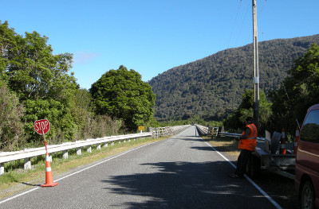
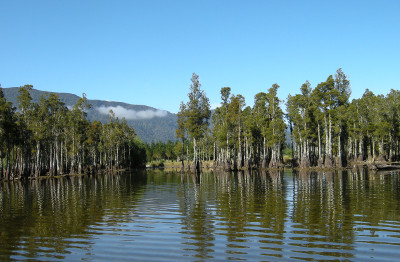
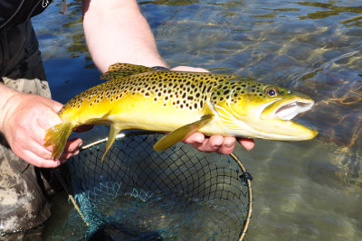

釣行日誌 ＮＺ編 「翡翠、黄金、そして銀塊」
湖へ
2010/11/26(FRI)-1
２６日の朝は、ゆっくり起きた。今朝は、コル・コテッジのオーナー夫妻、ポールさんとリンダさんが家に朝食を食べに来るように招待してくれた。ディーン君やブリントさんと懇意にしているらしいオーナーの家は、コテッジから車で５分ほどの場所にあり、僕と鰐部さん、ディーン君はよく手入れされた庭を眺めながら食堂へと案内された。テーブルには、朝食にはちょっと豪華すぎるほどの料理が並べられ、一同は歓談しながら料理に舌鼓を打った。鰐部さんはミートボールが美味しいと言って、おかわりをしていた。僕もパンが美味しかったので、たくさんいただき、お腹がいっぱいになってしまった。
しっかり腹ごしらえが出来たところで、僕たちはディーン君の車に乗り込み、ホキティカ近郊の湖を目指して走り出した。交通量の少ない道路を快調に飛ばしていたディーン君であったが、何と、道路工事の通行止めに遭い、しばらく停車を余儀なくされた。どうやら橋梁の点検をしているらしい。そこで１５分ほど足止めされたあと、ようやく橋が通れるようになり、僕たちは再び走り出した。

湖に着くと、砂利道のランプが湖水の中に通じており、手慣れたハンドルさばきでボートを積んだトレーラーをバックさせて、ディーン君がボートを湖水に浮かべた。いそいそとウェーダーを履き、今日はフィッシングベストは着ずにライフジャケットを身につけて、釣りに臨んだ。ボートの中は三人乗るとちょっと手狭になるので、僕のロッドはたたんで荷物入れに押し込んだ。僕は鰐部さんのロッドを借りて釣ることになる。
ボートが湖の中央に向けて走り出す。辺りの木々は、根っこの部分が約1.5mほど泥で汚れており、現時点ではだいぶ渇水になっていることが見て取れた。快晴の空の元、水面は穏やかで水は澄んでおり、遠くからでも鱒が見えそうであった。今日の釣りは、完全なサイトフィッシングであり、まず鱒を見つけてからおもむろにキャストするという釣り方である。渇水のためか、かなり遠浅になっている岸辺の立木やら根っこやらが密集しているあたりがポイントらしく、エンジンを止めてオールで漕いで、ディーン君が目を皿のようにして鱒を探す。

岸から50mほどの所で、今日の１尾目をディーン君が見つけた。今日は鰐部さんからということで、鰐部さんがキャストする。鱒は止水を右へ左へ動いていくので、素早く正確なキャストが求められる。ドンぴしゃのキャストを決めた鰐部さんのフライを鱒が襲い、ファイトが始まる。点在する立木の根っこに気をつけながら鰐部さんが上手に鱒をいなして寄せてくる。渇水で水深が浅いので、ディーン君がボートから下りて鱒をネットにすくった。口の大きな立派なブラウンであった。幸先良く今日の釣りが始まった。

鱒をリリースしたあとで、ディーン君が次なる獲物を探してボートを漕ぎ出す。鰐部さんのロッドを借りてキャストの準備をして、僕も魚影を探す。しばらくボートを進めたあとで、ディーン君がオールを漕ぐ手を止めた。鱒を見つけたらしい。彼が指示をした方向へ、小さな黒いウーリーバガーをキャストする。一投目、二投目、三投目。なかなか思うようにはフライを打ち込めない。四投目でリトリーブを始めると、ググッとロッドが重くなった。ストライク！ ボートの上は足場が良いので安心してファイトできる。立木の根っこさえ気をつければ、止水なので、急流に逃げ込まれて追いかける心配もない。徐々に鱒を弱らせ、ボートに寄せてくると、ディーン君が取り込みのためにボートを降りた。ランディングネットに収まったのは、体色と斑点の鮮やかな黄金色の鱒であった。本日の１尾目を釣り上げ、一安心すると同時に、もりもりと闘志がわき上がってきた。
釣行日誌ＮＺ編 目次へ
サイトマップ
ホームへ
お問い合わせ